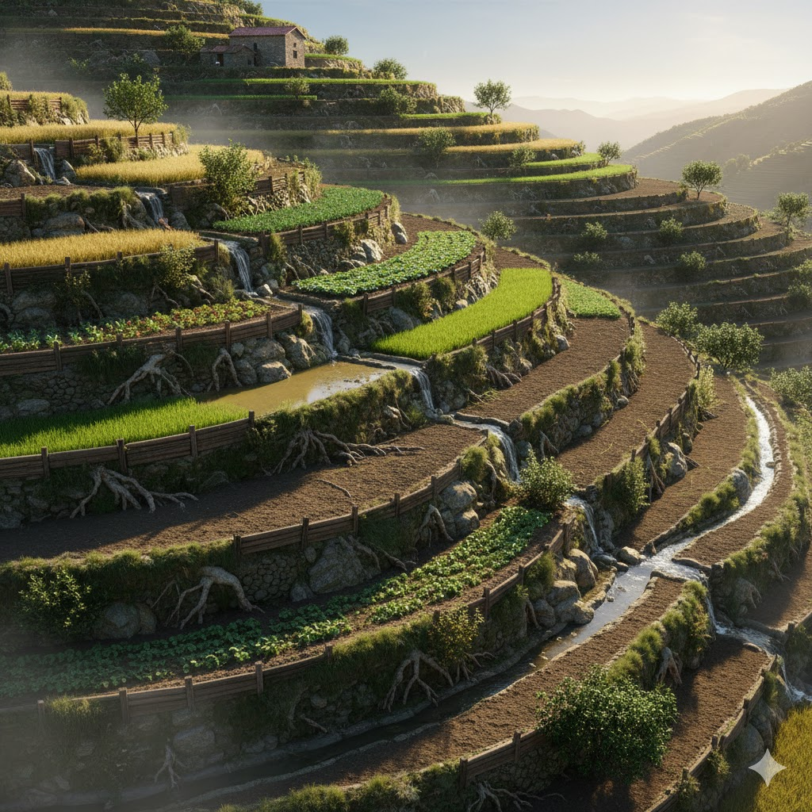
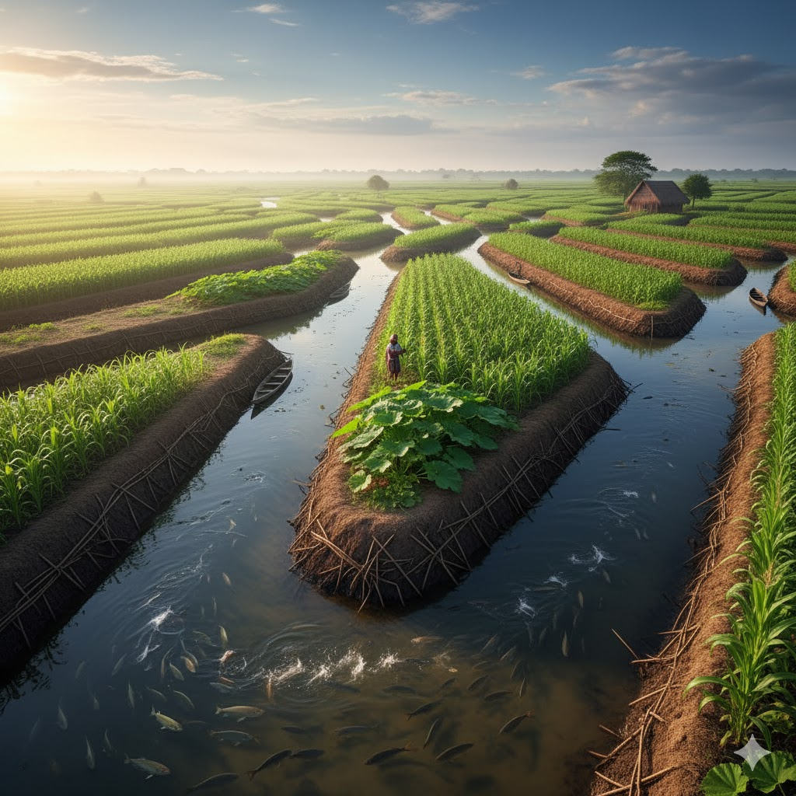
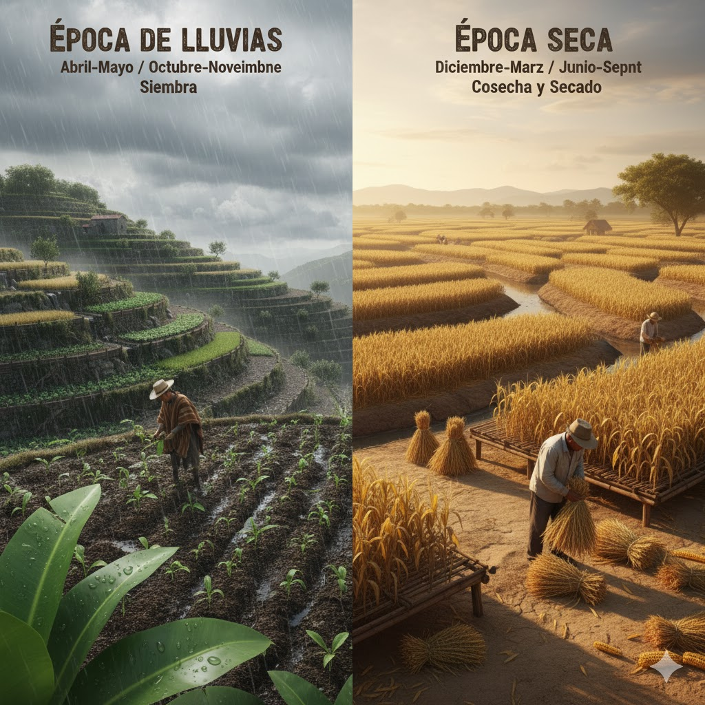

Nuestros ancestros desarrollaron técnicas agrícolas sofisticadas que permitieron vivir en armonía con la Madre Tierra durante siglos. Estos saberes se mantienen vivos hoy.
Las terrazas son escalones agrícolas construidos en laderas inclinadas para convertir terrenos difíciles en espacios productivos.
"Aquí nos toca hacer terrazas por lo pendiente del terreno"

Los camellones son montículos elevados rodeados de canales que permiten cultivar en zonas inundables.

"Todo es un ciclo que se repite: la vida, la luna, la siembra y la cosecha."
| Fase | Actividades Agrícolas |
|---|---|
| Luna Nueva | Preparar tierra y limpiar terreno |
| Luna Creciente | Sembrar hortalizas y frutos |
| Luna Llena | Recolección y ceremonias |
| Luna Menguante | Sembrar raíces y podar |
Época de Lluvias: Abril-Mayo / Octubre-Noviembre → ideal para siembra.
Época Seca: Diciembre-Marzo / Junio-Septiembre → ideal para cosecha y secado.
